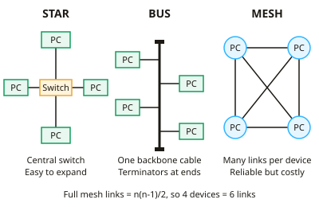

GCSE Computer Science · Topic 10
Network technologies
Network technologies is about how devices connect and how data travels from one to another.
We will compare network types and topologies, and the hardware and media that carry signals.
Then we study protocols and the T C P I P layers, I P and MAC addresses, D N S, packet switching, and client server, peer to peer and cloud models.
- 6 subtopics
- 356 questions
- Free: 10.1 notes and 10 questions
In this topic
- 10.1Network types (LAN, WAN, PAN) and topologies (star, bus, mesh)Free below · 65 questions
- 10.2Network hardware and transmission media: wired, Wi-Fi and BluetoothOpen in Full Marks · 69 questions
- 10.3Protocols and the TCP/IP layers: HTTP, HTTPS, FTP, SMTP, IMAP, POPOpen in Full Marks · 34 questions
- 10.4IP and MAC addresses, DNS and packet switchingOpen in Full Marks · 37 questions
- 10.5Client-server, peer-to-peer, the cloud and virtual networksOpen in Full Marks · 82 questions
- 10.6Data transmission: packets, serial and parallel, USB and error detectionOpen in Full Marks · 69 questions
10.1 · Free notes
Network types (LAN, WAN, PAN) and topologies (star, bus, mesh)

Key points
- A network is two or more computers or devices connected so they can share data and resources, such as files, printers and an Internet connection.
- A LAN (Local Area Network) covers a small geographical area on one site, such as a school, office or home. The organisation owns and manages its own cabling, switches and WAPs.
- A WAN (Wide Area Network) covers a large geographical area such as cities or countries. It normally relies on infrastructure leased from telecoms companies, and the Internet is the largest WAN.
- A PAN (Personal Area Network) connects devices within a few metres of one person, for example a phone linked to a smartwatch or headphones by Bluetooth.
- Star topology: every device connects to a central switch (or hub) with its own cable. It is easy to add devices, a cable fault affects only one device, and data collisions are rare. However, the switch is a single point of failure and more cable is needed.
- Bus topology: all devices attach to one shared backbone cable with a terminator at each end. It is cheap and needs little cable, but only one device can transmit at a time. Collisions increase as devices are added, performance falls, and a backbone fault can stop the whole network.
- Mesh topology: devices connect directly to several others. In a full mesh every device links to every other, so links = n(n-1)/2; 5 devices need 10 links. A partial mesh links only some devices.
- A mesh gives redundancy: if one link or device fails, data is rerouted by another path, so it is highly reliable. It is expensive and complex to install because of the many cables or connections.
- In a client-server network a central server manages files, security, backups and user accounts, and clients request services from it. In a peer-to-peer network every computer has equal status and shares its own files, with no central control.
- Benefits of networking: shared resources, shared Internet access, central backup and easy communication. Drawbacks: malware can spread between connected devices, hackers can gain access, and users depend on the server and cabling working.
- Network performance depends on bandwidth, the number of connected devices, the transmission media and the topology. Exam answers should link the topology to a specific advantage or disadvantage in the scenario given.
In more detail
- Worked star failure: 30 lab PCs on one switch: one broken cable takes one PC offline; a failed switch takes all 30 offline.
- Worked mesh links: a full mesh of 5 devices needs 5 × 4 ÷ 2 = 10 links; 10 devices need 45.
- Worked bus: all devices share one backbone, so collisions increase with more devices, and a break in the backbone stops the whole network.
- Worked PAN: a phone, a smartwatch and wireless earbuds linked by Bluetooth.
- Choosing: a small office → star (reliable, easy to add devices); sensors across a city → mesh (traffic can reroute).
Practice
Network types (LAN, WAN, PAN) and topologies (star, bus, mesh): 10 questions
Pick an answer to check it, or open the answer for the explanation.
1. A school connects its computers, printers and servers across one site using cabling and switches that the school owns. What type of network is this?
- PAN
- WAN
- LAN
- VPN
Show answer
C: LAN. A LAN covers a small area such as one site and is owned and managed by the organisation. A WAN covers a wide area, and a PAN is only a few metres around one person.
2. Which is the best example of a PAN?
- Computers in a school ICT room
- A bank linking branches in different countries
- A smartwatch connected to a phone by Bluetooth
- The Internet
Show answer
C: A smartwatch connected to a phone by Bluetooth. A PAN links personal devices within a few metres of one person, typically using Bluetooth. The other options describe a LAN or a WAN.
3. A company links its offices in London and Leeds using lines leased from a telecoms provider. What type of network is this?
- WAN
- Star
- LAN
- PAN
Show answer
A: WAN. Connecting sites in different towns over leased lines is a WAN. A WAN covers a large geographical area, unlike a LAN. Star is a topology, not a network type.
4. A star network has 12 computers. One computer's cable to the switch is cut. What is the effect?
- Only that computer loses its connection
- The whole network stops working
- Data is sent on the backbone instead
- Every computer slows to half speed
Show answer
A: Only that computer loses its connection. In a star each device has its own cable to the switch, so a cable fault isolates only that device. Only a failure of the switch itself would stop the whole network.
5. Which topology connects every device to a single shared cable with a terminator at each end?
- Full mesh
- Star
- Partial mesh
- Bus
Show answer
D: Bus. A bus topology uses one backbone cable with terminators at both ends. Star uses a central switch, and mesh topologies use many direct links.
6. How many links are needed to connect 6 devices in a full mesh?
- 12
- 36
- 30
- 15
Show answer
D: 15. Links = n(n-1)/2 = 6 x 5 / 2 = 15. The value 30 forgets to halve, because each link joins two devices and would otherwise be counted twice.
7. A hospital wants a network that keeps working even if one cable fails. Which topology is most suitable?
- Bus
- Mesh
- Star
- Peer-to-peer
Show answer
B: Mesh. A mesh provides several routes between devices, so data can be rerouted if a link fails. In bus and star networks a single fault can cut off devices or the whole network.
8. A company has 20 computers. How many more cables does a full mesh need than a star network with a central switch?
- 210
- 380
- 190
- 170
Show answer
D: 170. Full mesh = 20 x 19 / 2 = 190 links. Star = 20 cables (one per computer). The difference is 190 - 20 = 170.
9. What happens to a bus network as more devices are added and all try to transmit?
- Collisions increase and performance falls
- Each device gets its own dedicated cable
- Data is automatically duplicated for safety
- Speed increases because there is more capacity
Show answer
A: Collisions increase and performance falls. All devices share one backbone, so only one can transmit at a time. More devices means more collisions and delays, so performance drops.
10. Why is it easier to add a new device to a star network than to a full mesh?
- A full mesh allows only five devices
- A star network is always wireless
- A star needs no switch at all
- A star needs only one new cable to the switch
Show answer
D: A star needs only one new cable to the switch. In a star the new device needs just one connection to the switch. In a full mesh it must be linked to every existing device, which needs many more links.
Keep going in Full Marks
Full Marks has 65 questions on Network types (LAN, WAN, PAN) and topologies (star, bus, mesh) (55 more than here), set out in practice levels. You also get notes and 3D models for all 6 subtopics of Network technologies, plus games, timed exams and past papers.